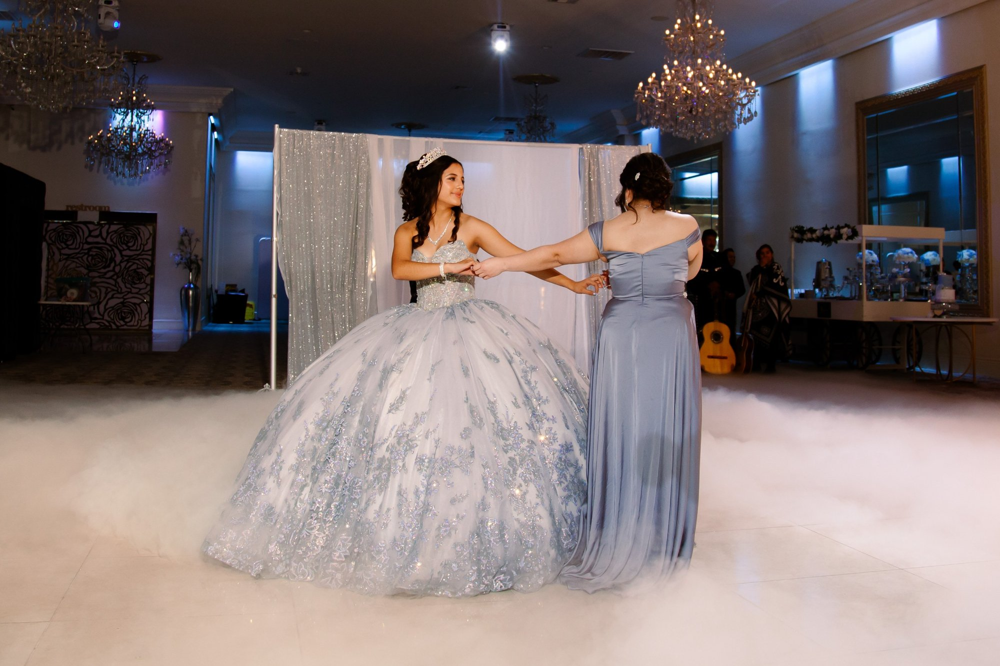
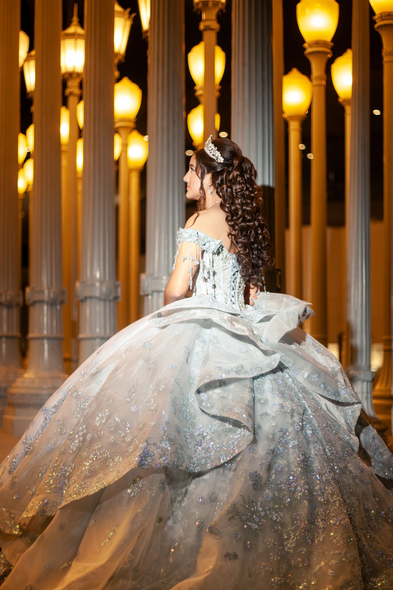
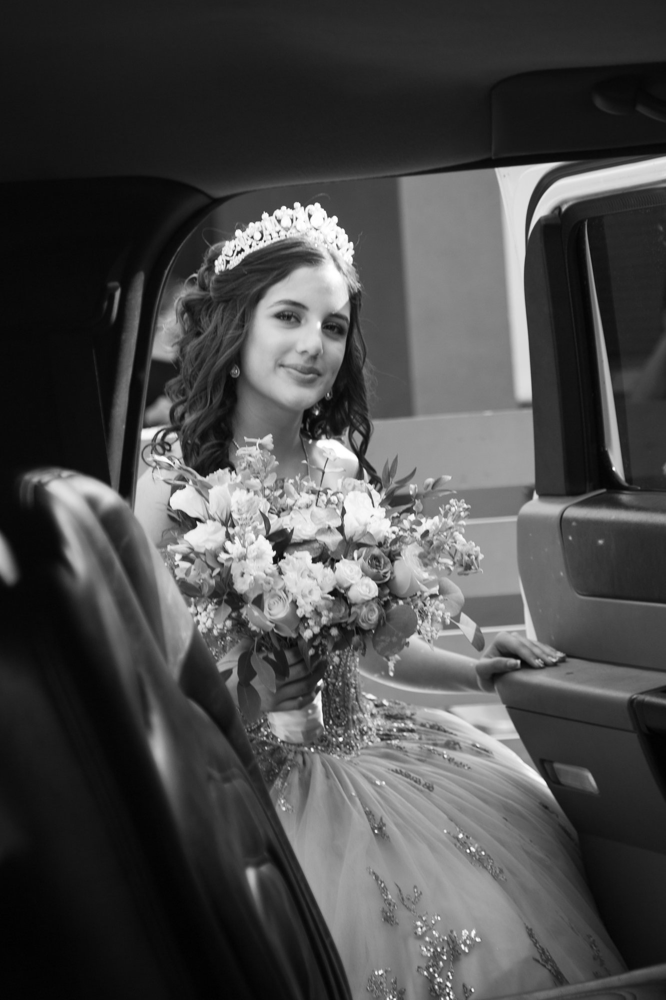
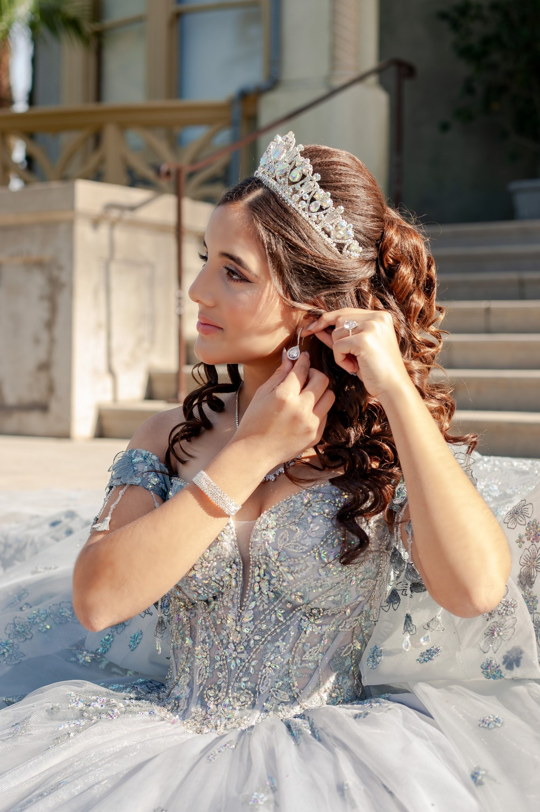
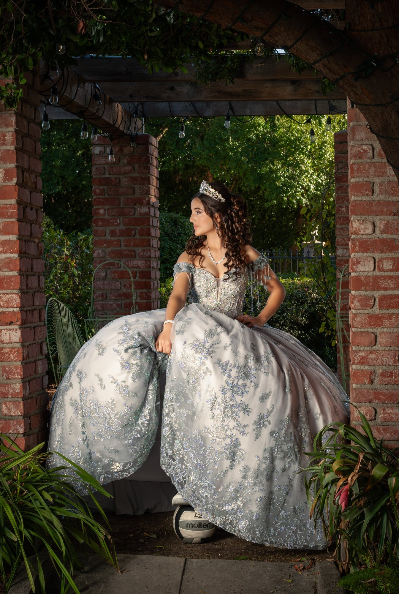
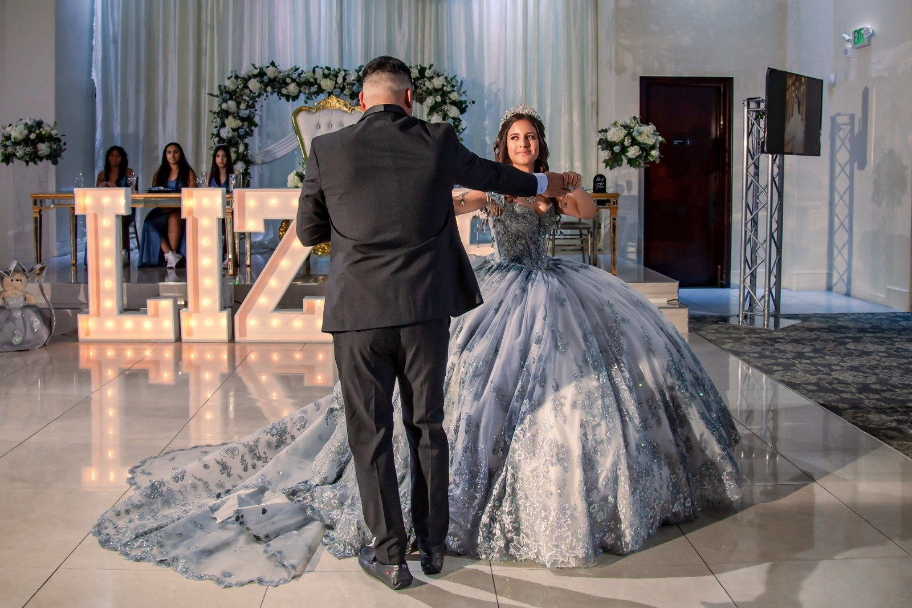

Home
Portfolio · Quinceañera
Quinceañera
A quinceañera is its own kind of story — the dress, the court, the family, the room.







A quinceañera is its own kind of story — the dress, the court, the family, the room.





